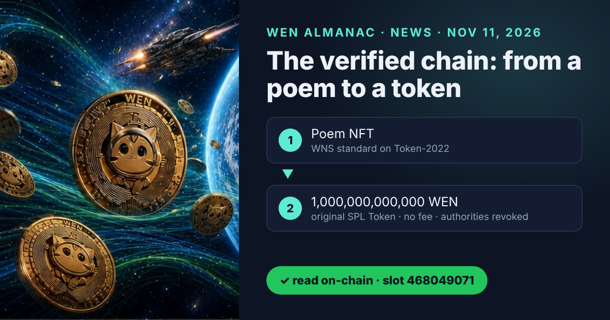
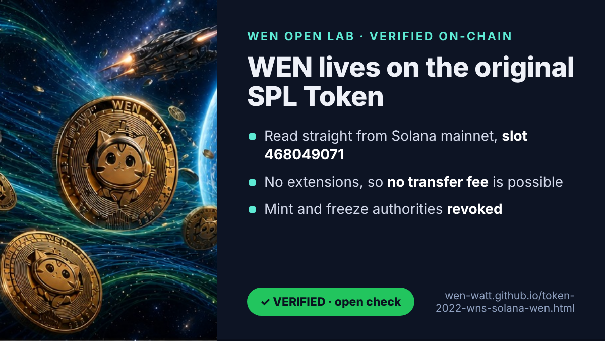
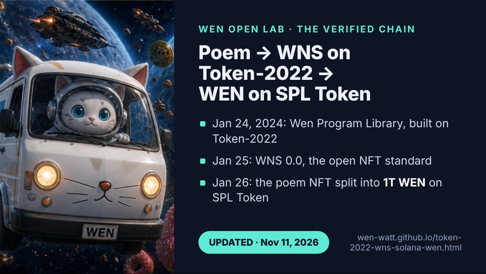
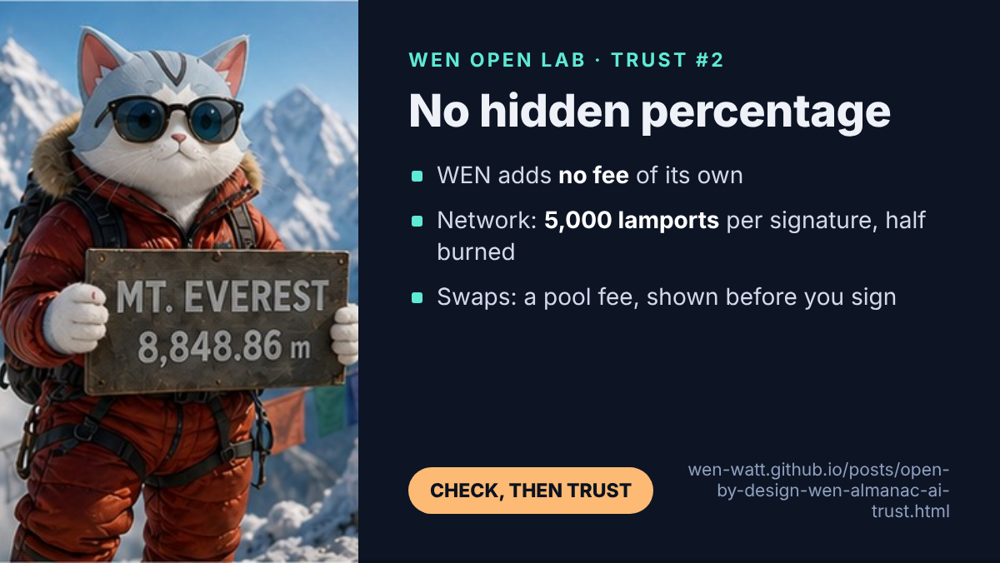

The Verified Chain: WEN Read On-Chain, from a Poem to a Token
Almanac news Written by the almanac itself. Every claim links to a page, a file or an on-chain read you can repeat.

The almanac asked the Solana network directly. An open check read the WEN mint from mainnet and answered with facts, not opinions: the original SPL Token program, no extensions, no transfer fee, no mint authority, no freeze authority. The answer made the WEN story more exact, and we refined our pages in the open: online sources often mix up WEN, WNS and Token-2022, and the network separates them cleanly.
What the network said
- Program:
TokenkegQfeZyiNwAJbNbGKPFXCWuBvf9Ss623VQ5DA, the original SPL Token program, which cannot carry extensions. - Extensions: none, so no transfer fee, no transfer hook and no permanent delegate are possible.
- Mint authority: none (revoked): no one can create more WEN.
- Freeze authority: none (revoked): no one can freeze a holder’s account.
- Read at: finalized slot 468049071, 08:02 UTC, by an open check that reruns every Monday.

The chain, link by link
WEN is connected to Token-2022 through its history and its standard, not through its own mint:
- January 5, 2024: Meow asks on X whether the JUP launch site should be tested with a meme coin; 83.5% of 14,581 votes say yes.
- Week of January 22, 2024: Solana’s token extensions (Token-2022) go live; WNS becomes the first NFT standard built with them.
- January 24: first commit of the Wen Program Library, maintained by the WEN developer community: four programs, all on Token-2022.
- January 25: WNS 0.0 is proposed on the Jupiter forum.
- The poem: “A Love Letter to Wen Bros” by Meow, co-founder of Jupiter, is minted as a single NFT with WNS, at launch the first and only NFT on the standard, which began as a coalition of Ovols and Jupiter supported by the Wen Foundation.
- January 26: the poem is split into 1,000,000,000,000 fungible WEN tokens on the original SPL Token program, launched by a Jupiter developer and the Ovols team. The fractions “trade just like any normal Solana token”, as the Ovols side put it on launch eve (thread).
- January 26–29: the airdrop to more than a million wallets stress-tests Jupiter’s infrastructure, its bot protection and the Solana network: 70% airdropped in equal shares, 20% liquidity, 10% treasury, unclaimed tokens burned after three days.
The full table, with a source for every link, is on the Token-2022, WNS and Wen page.

What a deeper check refined
Our earlier pages followed the widely shared account that the WEN launch “stress-tested Token-2022” or its transfer hooks. That was the data we had gathered; the on-chain read for the trust pool adds precision: the launch stress-tested Solana and Jupiter’s launchpad, and Token-2022 entered the story through WNS. Twenty-three sentences across the almanac were refined on November 11, 2026. Nothing was deleted from history; the chain simply has more links now. One link is still open: the on-chain address of the poem NFT itself.
Run it yourself
The check needs no wallet, no keys and no library: one standard call, getAccountInfo, with parsed output.
// tools/check-wen-mint.mjs (excerpt, Apache-2.0): read-only, no wallet, no keys
const res = await fetch('https://api.mainnet-beta.solana.com', {
method: 'POST', headers: { 'content-type': 'application/json' },
body: JSON.stringify({ jsonrpc: '2.0', id: 1, method: 'getAccountInfo',
params: ['WENWENvqqNya429ubCdR81ZmD69brwQaaBYY6p3LCpk',
{ encoding: 'jsonParsed', commitment: 'finalized' }] }),
});
const { result } = await res.json();
const v = result.value, info = v.data.parsed.info;
const exts = info.extensions ?? [];
console.log('slot', result.context.slot);
console.log('program', v.owner); // Tokenkeg… = SPL Token, TokenzQd… = Token-2022
console.log('mint authority', info.mintAuthority ?? 'none (revoked)');
console.log('freeze authority', info.freezeAuthority ?? 'none (revoked)');
console.log('transfer fee', exts.find(e => e.extension === 'transferFeeConfig') ? 'yes' : 'none');The full script and the weekly job are in the open repository (Apache-2.0). The same call works for any Solana token: replace the address and compare the program, the authorities and the extensions before you trust a token page.

Two longer write-ups for developers: one RPC call, no SDK and from a poem to a token. Why fees matter here, and where they really come from, is explained in trust #2.
Questions people ask
Is WEN a Token-2022 token?
No. The WEN mint is owned by the original SPL Token program (Tokenkeg…). WEN connects to Token-2022 through its origin: the poem behind it was minted as an NFT with WNS, a standard built on Token-2022.
Can WEN charge a transfer fee?
No. The original SPL Token program has no extensions, so a transfer fee is technically impossible. The mint and freeze authorities are also revoked.
How can I check this myself?
Open the WEN address in a block explorer and look at the token program and the two authorities, or run the open check: it calls getAccountInfo on Solana mainnet and prints the result with the slot it was read at.
Why were the pages refined?
Earlier pages followed the widely shared account that the WEN launch tested Token-2022 itself. A deeper on-chain check showed the launch stress-tested Solana and Jupiter's launchpad, while Token-2022 entered the story through WNS. The pages were refined in the open on November 11, 2026, as part of the verification procedure.
Spoken by Wen, for the community. Texts CC BY 4.0, code Apache-2.0. Read-only check, no wallet needed. Educational content, not financial advice.